Concept A (3D room) was picked and reworked as a noir detective office. It is a working prototype with Fahmi's real content; the three earlier concepts stay below for reference. Every version keeps a fast lane for recruiters (full dossier, CV, email) and a phone layout.
A rainy-night private-eye office in real-time 3D. The visitor investigates the case "Muhammad Fahmi Ady Susilo — Software Developer": every piece of evidence opens part of the portfolio.
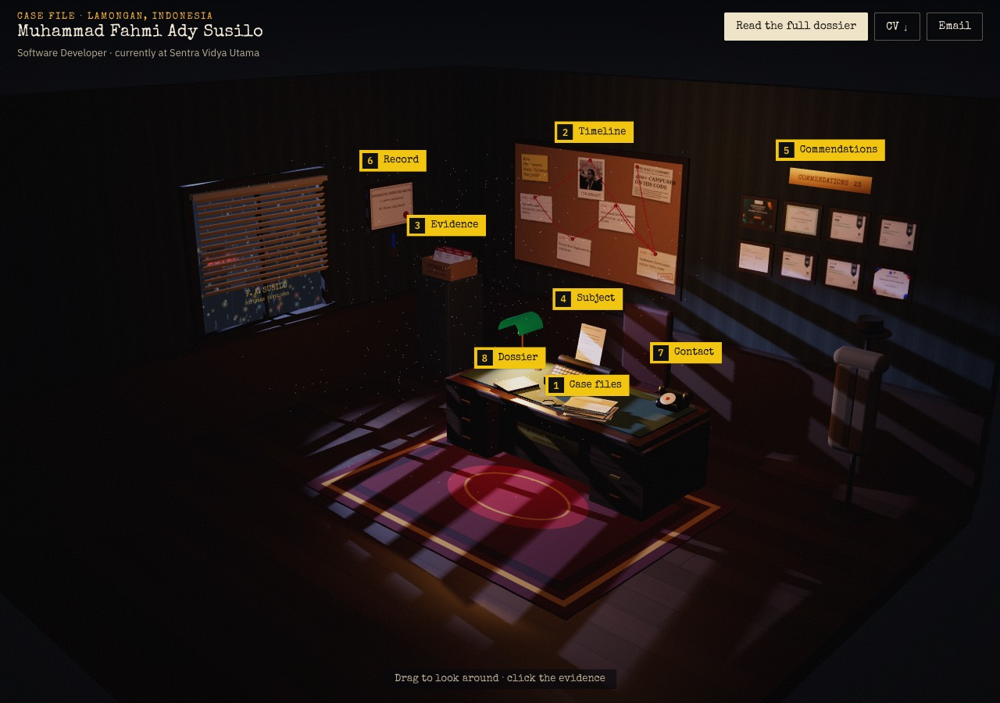
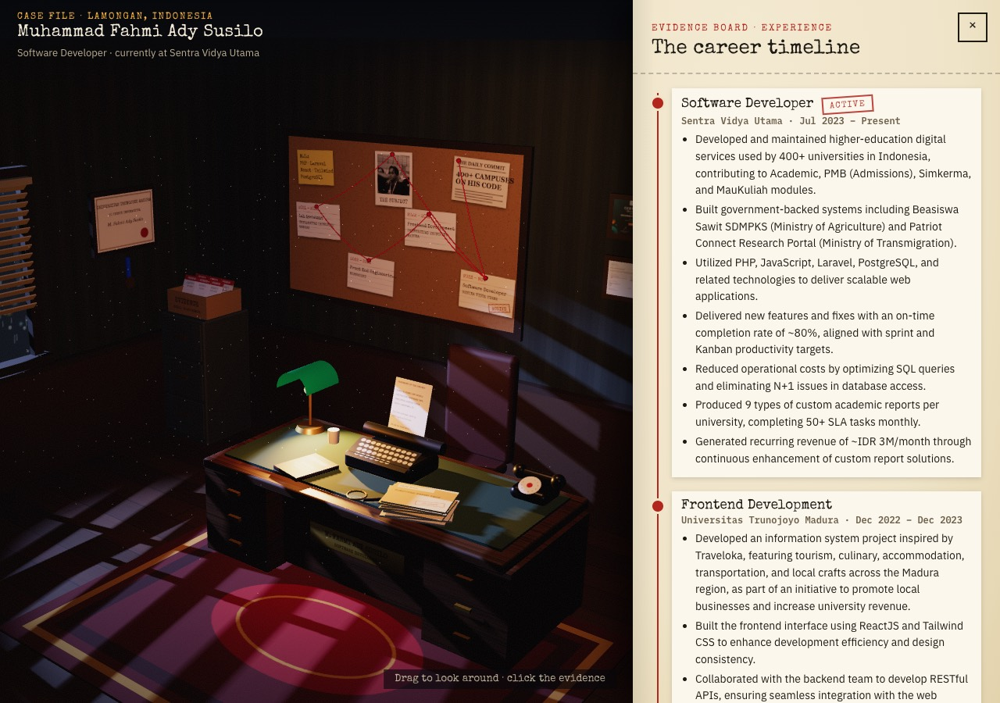
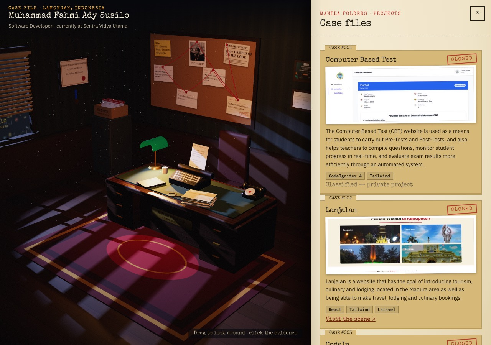
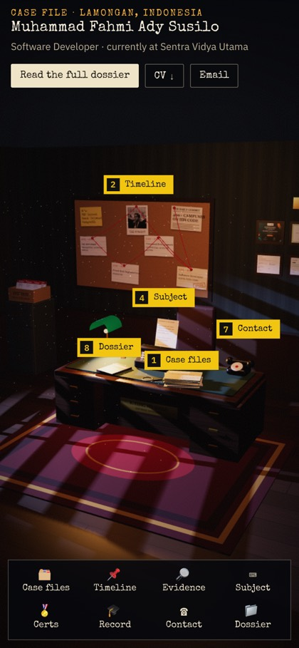
| Evidence in the room | Opens |
|---|---|
| ① Manila case folders on the desk ("CASE #001 …") | Projects: 5 closed cases + 3 sealed "file pending" folders (Webtix, Lapetshop, Restaurant) waiting for descriptions |
| ② Corkboard with red string, mugshot polaroid and a newspaper clipping | Experience timeline: UTM lab assistant → Ruangguru → Lanjalan (UTM) → Sentra Vidya |
| ③ Evidence box with bagged exhibits on the filing cabinet | Skills as Exhibit A–F |
| ④ Typewriter with a typed statement | About / subject profile + key numbers |
| ⑤ Framed commendations on the wall (real certificate images) | All 23 certificates |
| ⑥ Framed diploma + medal | Education, awards, organizations |
| ⑦ Rotary telephone | Contact: email, phone, socials |
| ⑧ Black "TOP SECRET" dossier | CV download + summary |
Drag to look around; click an object or its yellow evidence marker → the camera moves in and a manila "case file" panel slides in (bottom sheet on phones). "Read the full dossier" shows everything on one page; it opens automatically when WebGL is missing.
Vite + React + TS + Tailwind; React Three Fiber + drei (CameraControls, Html markers, useGLTF); room modelled in Blender with baked lighting → .glb (Draco + KTX2); content from content.json.
High · ~4 weeks: ~1.5 w modelling/baking the office, ~1 w scene + camera + markers, ~1 w panels, dossier, a11y and fallback, ~0.5 w perf on phones.
A late-night developer room in real-time 3D. Every object is a section: monitor = projects, corkboard = experience, keyboard keycaps = skills, bookshelf = 23 certificates, phone = contact.
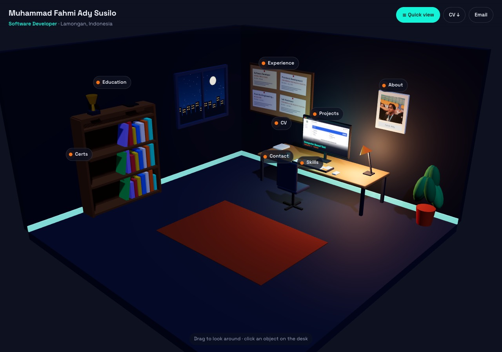
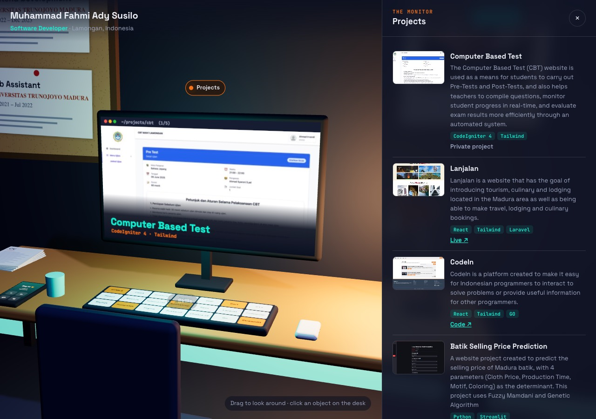
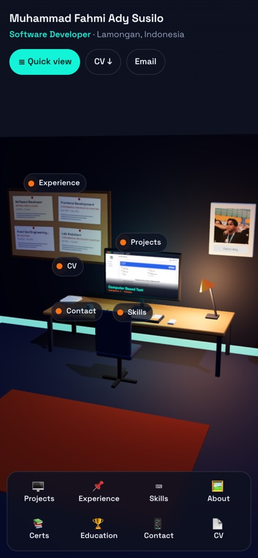
Drag to orbit, click an object → camera flies to it and a side panel (bottom sheet on phones) opens. "Quick view" shows everything as one plain page.
Vite + React + TS, React Three Fiber + drei (CameraControls, Html hotspots), a Blender-made .glb room (Draco/KTX2), Tailwind for panels.
High · ~3–4 weeks. Most time goes to modelling/lighting the room and baking textures.
The portfolio is a retro-modern desktop OS on a kawung-batik wallpaper: draggable windows, a working terminal (help, projects, sudo hire-fahmi), experience as a git log, skills as a package manager. Phones get a home screen with apps.
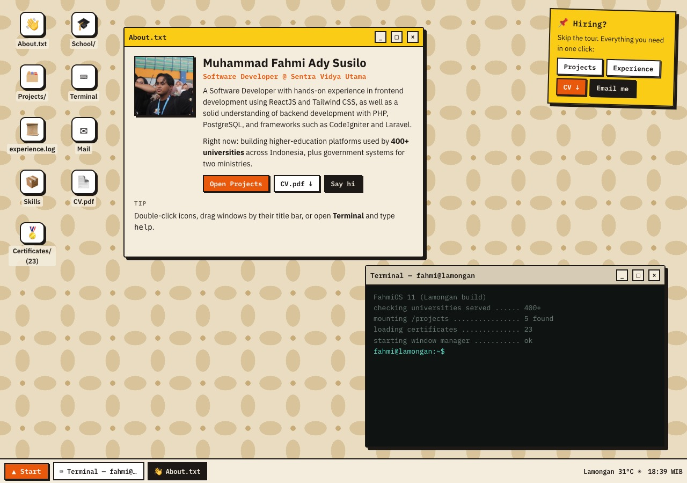
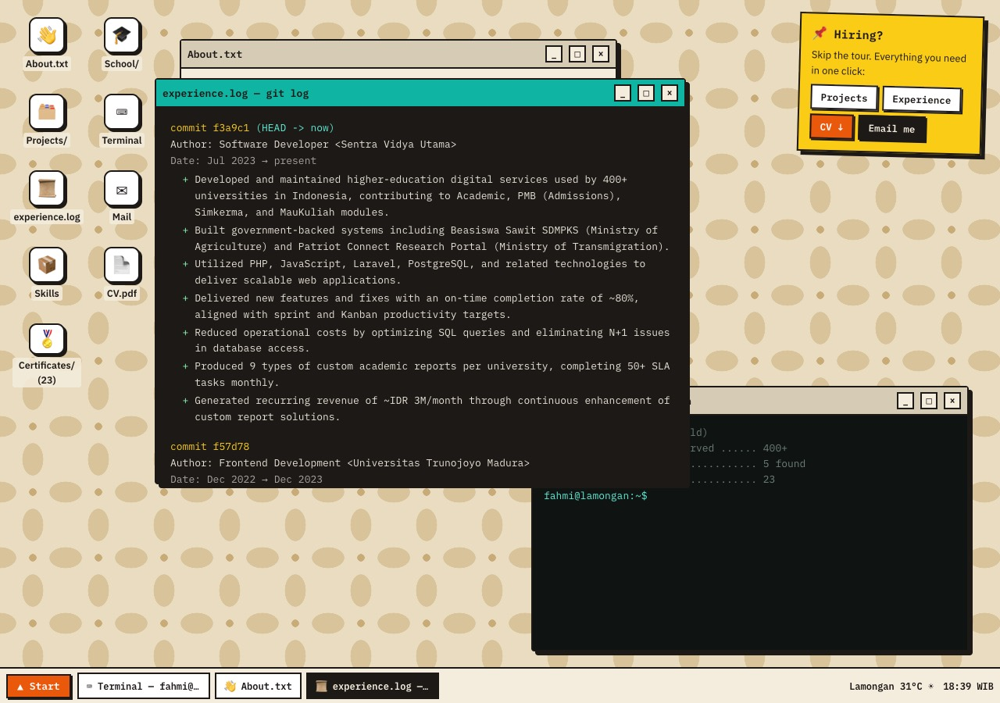
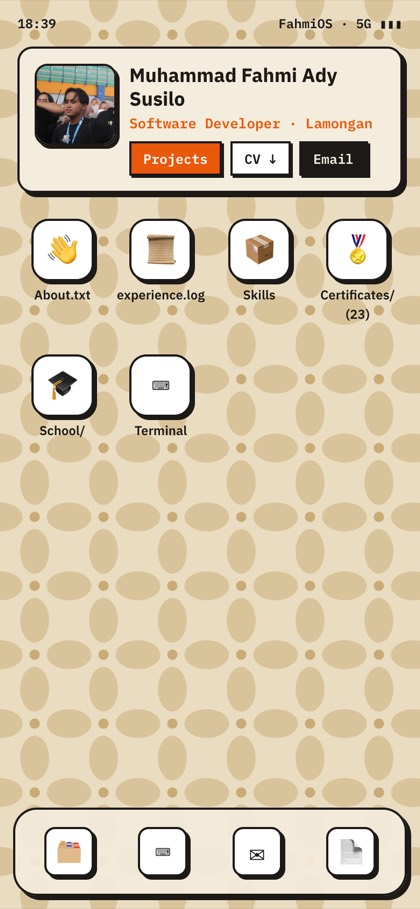
Opens with About + Terminal already on screen. A yellow "Hiring?" sticky note links Projects / Experience / CV / Email. Every window has a deep link (?open=projects).
Vite + React + TS + Tailwind, Zustand for the window manager, react-rnd (drag/resize), a small command parser for the terminal. No 3D.
Medium · ~2 weeks. Logic-heavy but asset-light; easiest to keep content in one JSON.
A pixel side-scroller of his career: walk from Lamongan → MAN 1 → UTM campus → skill "?" blocks → Ruangguru camp → Lanjalan gate → Sentra Vidya tower → a project arcade → badge hall → finish flag & mailbox.
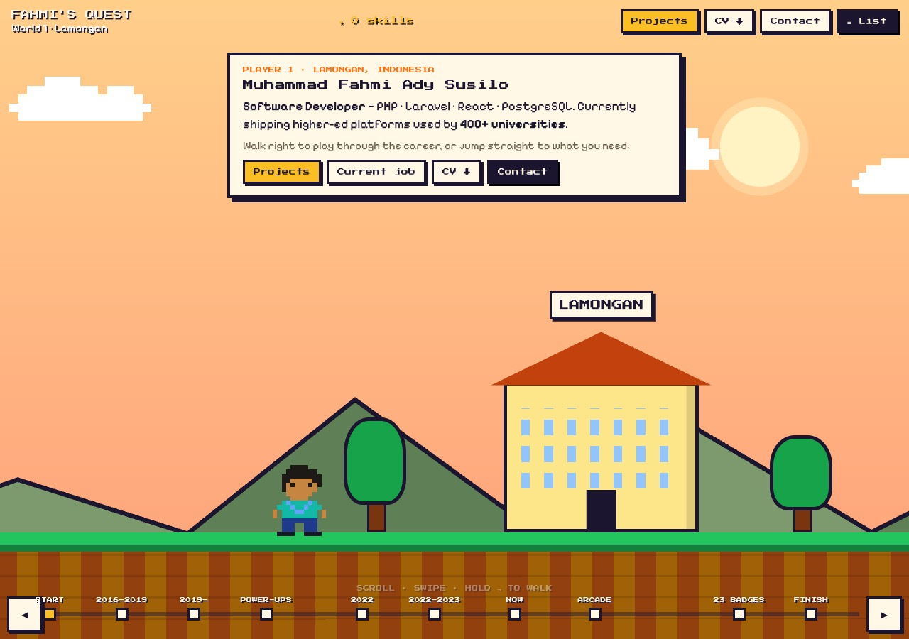
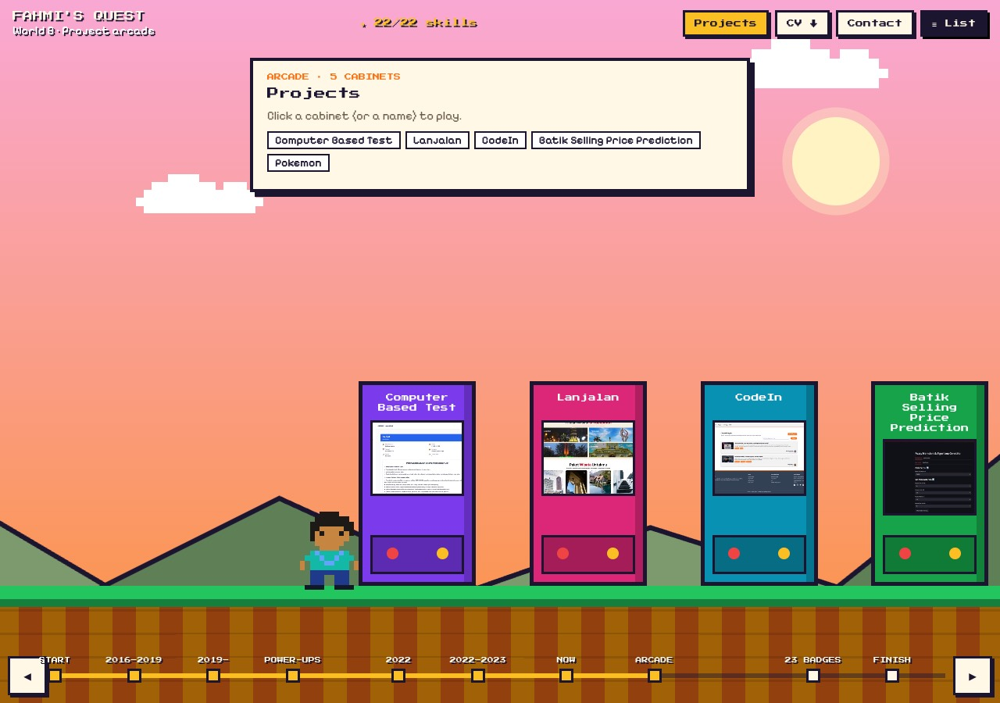
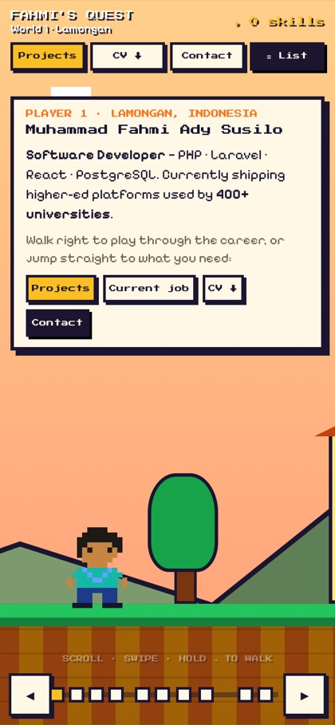
Scroll, swipe, arrow keys or the ◀ ▶ buttons walk the hero; each stop shows a dialog box. The bottom track fast-travels; "List" is a plain one-page CV view.
Vite + React + TS + Tailwind, GSAP (or plain rAF) for movement/parallax, hand-made pixel sprites (Aseprite → spritesheet). Optional: Phaser if it grows into a real game.
Medium–high · ~2–3 weeks; pixel art for buildings and walk cycles is the long pole.
content/AUDIT.md; structured data: content/content.json.